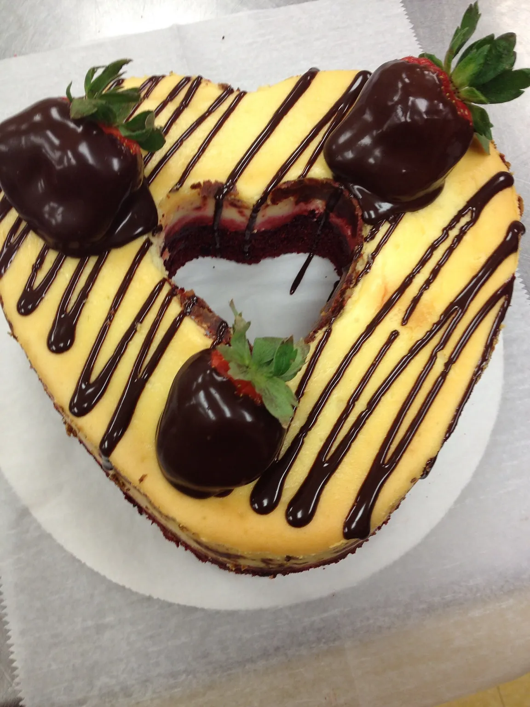
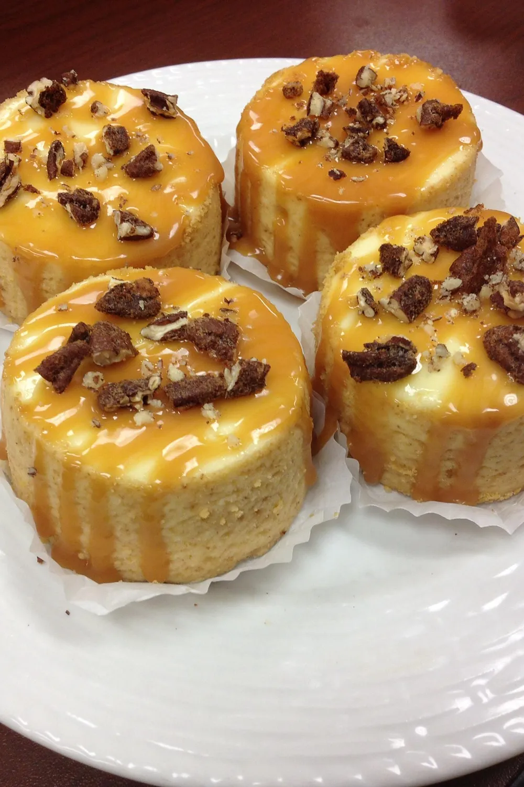
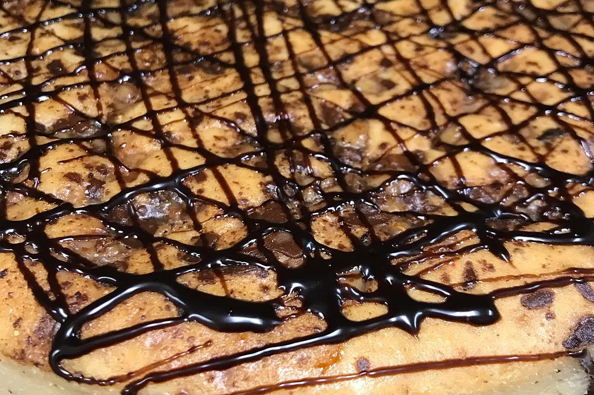
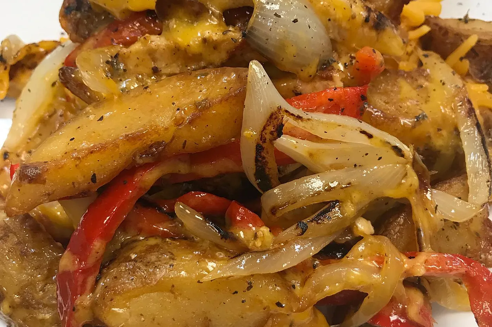
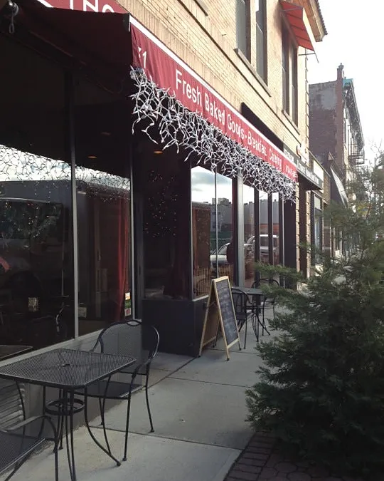
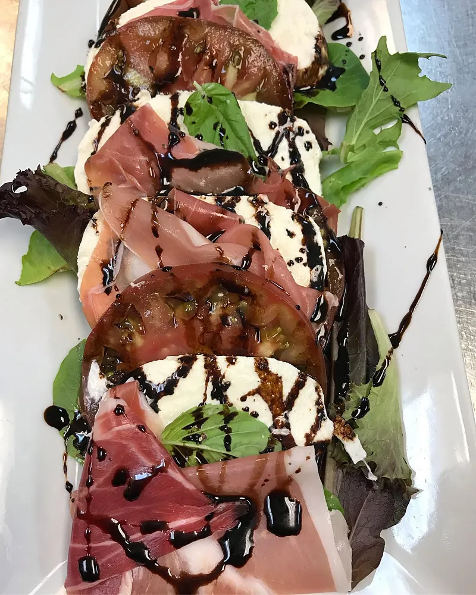

Concept preview · Bloomfield
Dinner, brunch, and cheesecake made fresh.
Italian-American favorites, weekend brunch, and more than forty homemade cheesecakes, baked to order at 71 Washington Street.
Hours below

5 pm–9 pm
Sat 10:30 · Sun 10
48 hours’ notice for whole cakes
Bloomfield, NJ 07003
The cheesecake case
Baked fresh, to order.
Every cake is homemade. Have a slice with coffee, or order a whole one for the table. Please allow 48 hours.


Flavors, as baked
- Apple Cider Donut Crumb
- Apple Crumb Pecan
- Banana Pudding
- Blueberry Crumb
- Boston Cream
- Brownie Explosion
- Cannoli
- Caramel Toffee Crunch
- Carrot Cake
- Cherry
- Chicken & Waffle
- Cookie Butter Swirl
- Cookie Jar
- Cookie Monster
- Cornbread, Spiced Honey & Caramel Pecans
- Dark Chocolate Oreo Cookie
- Dark Chocolate Turtle
- Ferrero Rocher
- Fresh Fig, Pistachio & Goat Cheese
- Fresh Mango Coconut
- Fruity Pebble Cereal Milk
- Funfetti
- Happy Birthday Funfetti
- Heath Bar
- Italian Ricotta Blueberry
- Italian Ricotta Cheesecake
- Key Lime
- Kitchen Sink
- Lemon Blueberry
- Mousse Layer Cheesecake
- New York Style
- Oreo Cookie
- Peach Crumb
- Peanut Butter Cup Slutty Brownie
- Peanut Butter Oreo
- Pistachio & Spiced Honey
- Pumpkin Cheesecake
- Red Velvet Swirl
- Rice Pudding
- Salted Caramel Pecan
- Samoa
- Slutty Brownie
- Snickers
- Strawberry
- Sweet Potato Cinnamon
- Triple Chocolate Ganache
- Vanilla Bean Black & White
- White Chocolate Raspberry
…and more. Ask about today’s slices.
Price depends on flavor. Call 973-415-8885 to place a cake order.
Reviews
4.7 stars. 761 reviews.
“The food was fantastic and the cheesecake for dessert outstanding!”
“I tried the chicken and waffles and it was cooked perfectly. I love the apple cider donut cheesecake also!”
“Anthony and his staff always deliver quality food and service!”
Catering
Bring Anthony’s to your table.
Arancini, chicken parmigiana, baked ziti, meatballs and more, by the tray.
Half trays serve 10 and full trays serve 20. Call to plan your menu, pickup and availability.

Order ahead
A whole cheesecake or a few trays?
Tell Anthony’s what you need and when. They call you back to confirm flavors, trays, pickup time and price.


Visit
71 Washington Street, Bloomfield.
71 Washington StreetBloomfield, NJ 07003
For orders, reservations, and catering, please call.
Hours
- Thursday–Friday
- 11 am–4 pm
5 pm–9 pm - Saturday
- 10:30 am–4 pm
5 pm–9 pm - Sunday
- 10 am–3 pm
- Monday–Wednesday
- Closed
Closed between services from 4–5 pm, Thursday–Saturday. Please call for holiday and brunch service hours.